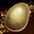
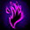

クリーチャーシステム概要
基本仕様クリーチャー冒険
クリーチャーPVP
クリーチャー図鑑
クリーチャー製作
クリーチャー編成
基本仕様
ネフォンクリーチャーとは、コクーンから出現する新しい概念の召喚獣です。
(2019/4/23改訂)メインクリーチャー1匹を活性化して連れ歩けます。

ネフォンクリーチャー 一覧にて各クリーチャーの詳細を掲載してます。
| 種類 | ペブル コクーン |
ソーラー コクーン |
サマー コクーン |
ハロウィン コクーン |
クリスマス コクーン |
Fate[HF] コラボ |
プリズム コクーン |
LR確定 コクーン |
|---|---|---|---|---|---|---|---|---|
|  |  |
 |
 |
|||||
| 入手方法 |
クエスト GDボス |
課金 | 期間限定 課金 |
期間限定 課金 |
期間限定 課金 |
期間限定 課金 |
期間限定 課金 |
期間限定 課金 |
| 出現する Rank |
N / R / HR | R / HR / SR / LR |
R / HR / SR /
LR SR以上はコラボクリーチャーのみ |
HR / SR / LR 40％の確率でSR以上 |
100%の確率でLR |
|||
| 取引 | 不可 | 可能 | 不可 | 可能 | ||||
| ゴールデン メダル |
不可 | 低確率で獲得 | ||||||
[ＬＲ確定コクーン補足]
※コラボクリーチャーは出現しません。
※取引・銀行預入・ギルド倉庫預入可能
各クリーチャーは「ステータス」を持っており、各クリーチャーの詳細から確認できます。

活性化したネフォンクリーチャーのステータスの半分の数値が持ち主のステータスとして追加されます。
多くのクリーチャーのステータスは以下の法則性で決まります。
| Rank | N ノーマル |
R レア |
HR ハイレア |
SR スーパーレア ラミア以外 |
SR スーパーレア ラミア |
LR レジェンドレア |
|---|---|---|---|---|---|---|
| 最大Lv | 60 | 70 | 80 | 90 | 100 | |
| 初期ステータス | 110 | 122 | 135 | 160 ※ | 166 | 190 |
| ステータス上昇 | 11 | 14 | 18 | 24 ※ | 30 | 35 |
| ボーナスポイント | 1 | 2 | 3 | 4 | 5 | |
| 必要強化値 | 500 | 1400 | 3900 | 10900 | - | |
| 素材強化値 | 40 | 100 | 300 | 1000 | 3000 | |
| スキル強化 必要ゴールド |
1万 | 5万 | 8万 | 12万 | 20万 | |
| 攻撃力 | STR+INT/2 （小数点以下切捨て） | |||||
| HP | VIT*12 | |||||
※バーサーカー、ケンタウロスナイトは初期ステータス162、ステータス上昇26で、通常のSRとは少し異なります。
※アーチャーは初期ステータス163、ステータス上昇27で、通常のSRとは少し異なります。
ネフォンクリーチャーのレベルを上げるには、「冒険」と「餌をあげる」の2種類があります。
餌は種類によって獲得できる経験値が異なります。
| 餌 | 獲得経験値 | |
|---|---|---|
| 発火石 | 5 | |
| 断熱石 | 5 | |
| 修復済みタティリス遺跡の出土品 | 80 | |
| 結晶石 | 150 | |
| 共鳴石 | 150 | |
| 神秘の石 | 170 | |
 |
クリーチャー鍛錬の結晶（小） | 500 |
|  | 炎の石 | 600 |
| クリーチャー鍛錬の結晶（中） | 1000 | |
| 異界の強化石 | 1300 | |
| クリーチャー鍛錬の結晶(大) | 2000 | |
クリーチャー冒険
|
1～4匹で1チームを作ってクリチャー冒険を行えます。 1回冒険を行う度に、活動ポイントを1消費します。 活動ポイントは0時に初期化されます。(最大10pt) 冒険を中断しても消費活動ポイントは戻りません。 課金アイテム「ユニティーストラップ」を使用することで最大3チームまで同時に冒険を行えます。 PVPチームにセットしたクリーチャーは冒険できません。 冒険中のクリーチャーは活性化できません。 冒険フィールドは力/健康/知識/サポートの4タイプあり 3段階の難易度（下層/中層/上層）と 4種類の時間（2,4,6,8時間）から選択できます。 冒険に勝利すると、クリーチャー用経験値に加えて 一定確率で水光石やサナの材料ボックスを獲得できます。 水光石はクリーチャーのスキルレベルを上げたり、図鑑登録する際に必要です。 |
 |
| サナの材料ボックス出現アイテム一覧 | |
|---|---|
 |
タティリス遺跡のかけら |
| 修復済みタティリス遺跡の出土品 | |
 |
神秘の石のかけら |
| 神秘の石 | |
 |
黒き炎の欠片 |
| 結晶石 | |
| 炎の石 | |
クリーチャーPVP
他のプレイヤーの所有するクリーチャーと対戦できます。
PVPは、1回につき活動ポイントを1消費します。
自分の勝ち点と近い他プレイヤーの編成からランダムで4チームがマッチングされ、4チーム全てに勝利すると対戦相手が更新されます。
また、マッチングされたチームは6時間に1度、自動更新されます。
更新ボタンで3回まで対戦リストを手動更新することも可能です。
| 対戦リスト手動更新 | 必要なゴールド |
|---|---|
| 初回 | 無料 |
| 2回目 | 1万G |
| 3回目 | 10万G |
PVPの勝ち点は1000点からスタートし、勝ち点によって等級が決定されます。
通常の勝利に加え、連勝によるボーナス点も発生します。
チャレンジャー等級は順位により紋章が変動します。
PVPランキングはクリーチャーPVPにて確認できます。
| アイコン | 等級 | 勝ち点 | 勝利時の獲得勝点 | 敗北時の損失勝ち点 |
|---|---|---|---|---|
| チャレンジャー | 7000～9999 | 8 | 12 | |
| ダイヤモンド | 5000～6999 | 9 | 11 | |
| プラチナ | 3400～4999 | 10 | 10 | |
| ゴールド | 2200～3399 | 10 | 9 | |
| シルバー | 1400～2199 | 10 | 8 | |
| ブロンズ | 1～1399 | 10 | 7 |
(2019/1/23 更新)
| クリーチャーPvP報酬一覧 | ||
|---|---|---|
| 補償の種類 | 既存の補償 | 変更補償 |
| 勝利の報酬 | ネフォンクリーチャーコイン | ネフォンクリーチャーコイン ×3 ネフォンクリーチャーのマナ ×1 |
| 敗北補償 | なし | ネフォンクリーチャーコイン ×1 ネフォンクリーチャーのマナ ×1 |
※「クリーチャーのマナ」の所持数は、クリーチャー図鑑の「製作画面」内の左端に表示されています。
クリーチャーのマナは「クリーチャー製作」で利用します。
クリーチャーのマナはクリーチャー転送システムでも入手可能です。
クリーチャー図鑑
クリーチャーを図鑑に登録することでキャラクター本体のステータス増加や能力値ボーナスが発生します。登録する際は、最大Lvまで育てたクリーチャーとクリーチャーコインが必要です。
クリーチャーのタイプや等級によって、追加能力値や封印解除に必要な材料は異なります。
図鑑登録してもクリーチャーは消滅せずにインベントリに残ります。

| Rank | 登録追加能力値 （各タイプのステータス） |
封印解除に 必要な水光石 |
図鑑登録に必要な ネフォンクリーチャーコイン |
|---|---|---|---|
| N | +3 | 各タイプの水光石 10個 | 5個 |
| R | +5 | 各タイプの水光石 15個 | 10個 |
| HR | +20 | 各タイプの水光石 20個 | 20個 |
| SR | +1/レベル 8 | 各タイプの水光石 30個 | 40個 |
| LR | +1/レベル 2 | 各タイプの水光石 40個 | 100個 |
クリーチャー製作
(2019/1/22 追加) クリーチャーのマナと指定の製作用素材を集める事で、特定のクリーチャーを確実に入手できるシステムです。製作素材は特定のモンスターから入手可能で対象となるモンスターは製作画面内で確認できます。
[製作開始] ボタンを押した後、対象モンスターを討伐する時に一定確率で入手できます。

クリーチャー製作に必要な素材一覧
※素材アイテムはインベントリ内に入りません。
※製作中に「製作中」ボタンを押すことで、中断させることができます。
※製作を中断すると、獲得した「クリーチャーのマナ」はそのまま残りますが、他の素材アイテムは全て消失します。
※製作が完了した後、再度同じネフォンクリーチャーを製作できます。
※クリーチャーのマナはネフォンクリーチャー転送とクリーチャーPvPから獲得できます。
クリーチャー編成
(2019/4/23 改訂) 各クリーチャーが[メイン効果1種]+[サブ効果2種]のパッシブ効果を持つようになりました。メインクリーチャー1体とサブクリーチャー3体のパッシブ効果を編成によって得られます。

各クリーチャーのパッシブ性能および各パッシブ効果一覧
設定したクリーチャーの内、メインクリーチャーはメイン・サブ効果の計3種のパッシブ効果が、
サブクリーチャーはサブ効果2種のパッシブ効果が活性化します。
活性化している同種のパッシブ効果は、合算されたレベルの効果が適用されます。
※パッシブ効果のレベルは50Lvまで。
※メインとサブに同じクリーチャーを1体ずつ登録可能。
※サブに同じクリーチャーは登録できません。